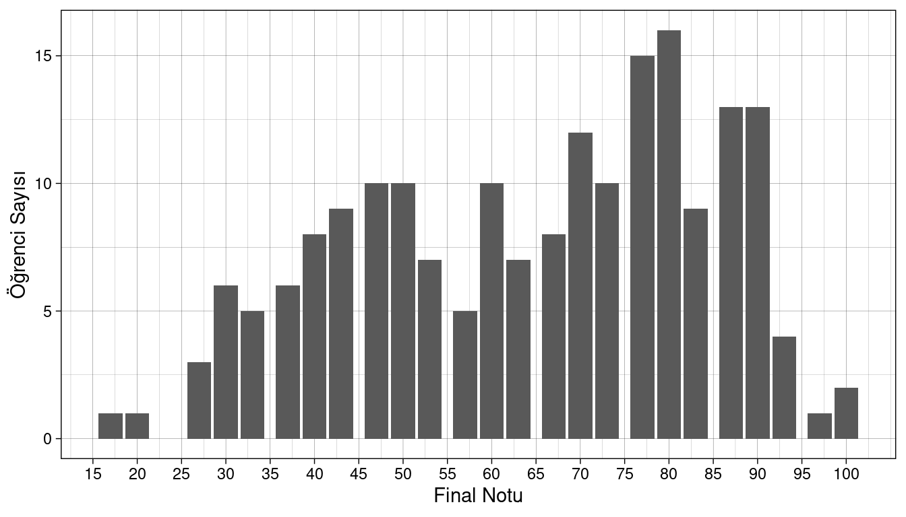
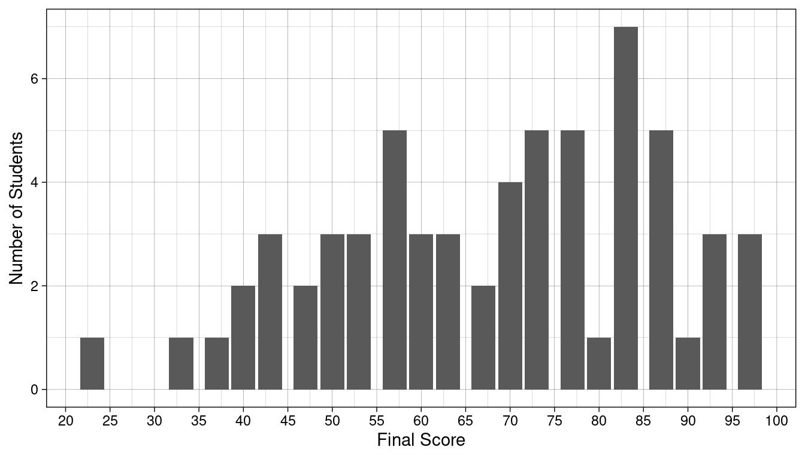

Midterm Results / Vize Sonuçları
Grup 1 (Türkçe) sonuçları
Sınava katılan öğrenci sayısı: 189 ve vize notlarının ortalaması: 59.6. Aşağıda, vize notlarının dağılımı verilmiştir.
Aşağıdaki tabloda, sayfaları gezinerek veya arama kutusunda öğrenci numaranızı arayarak notlarınızı öğrenebilirsiniz.
Group 2 (EN) results
Total number of students took the exam: 70 and average score is: 60.5. Below is the distribution of scores:

And here’s the scores. You can scroll pages or search for your student number in search box.